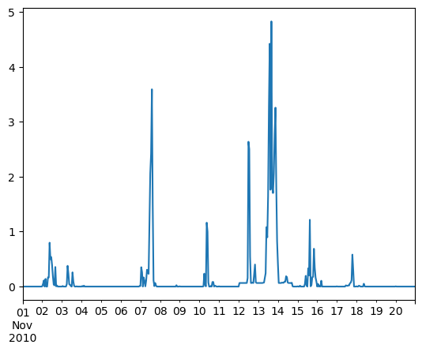
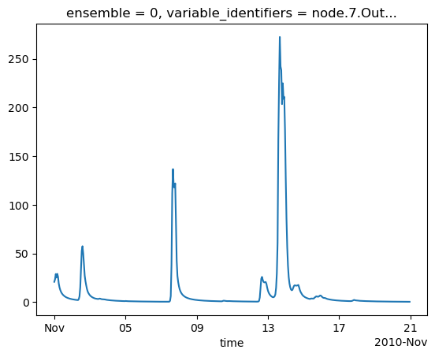
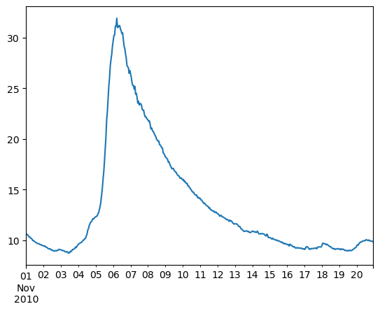
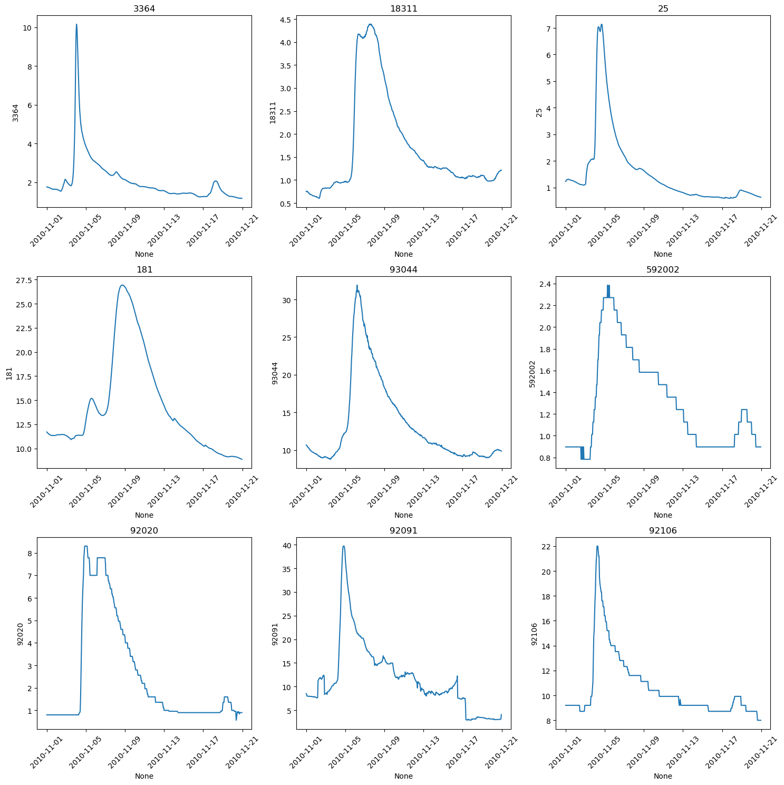
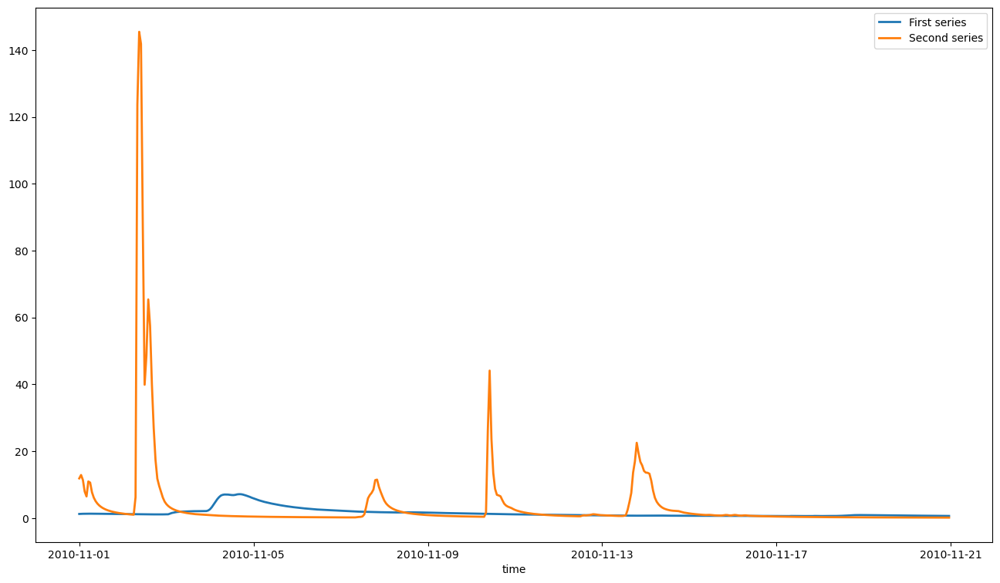
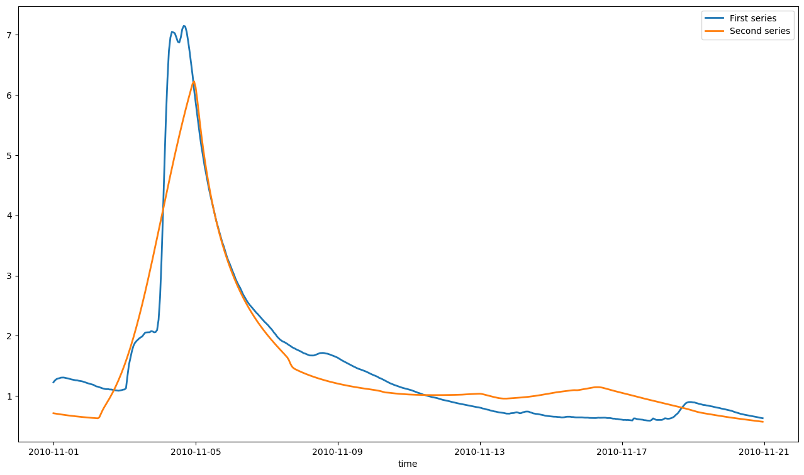

Cascaded calibration of subcatchments defined by multiple gauges¶
from swift2.doc_helper import pkg_versions_info
print(pkg_versions_info("This document was generated from a jupyter notebook"))
This document was generated from a jupyter notebook on 2025-03-27 17:22:20.805191
swift2 2.5.1
uchronia 2.6.2
Use case¶
2021-01: this vignette works structurally, but is confined to overly short (and possibly difficult) data to keep runtime low
This vignette demonstrates how one can calibrate a catchment using multiple gauging points available within this catchment. Instead of setting up a whole-of-catchment calibration definition, it makes sense, at least in a system where subareas above a gauge points do not have a behavior dependent on other catchment processes (meaning mostly, no managed reservoirs). SWIFT offers capabilities to calibrate such subcatchments sequentially, feeding the input flow of upstream and already calibrated subcatchments to other subcatchments, thus cutting down on the complexity and runtime of the overall catchment calibration.
from cinterop.timeseries import xr_ts_end, xr_ts_start
from swift2.classes import CompositeParameteriser, ObjectiveEvaluator, Simulation
from swift2.const import CATCHMENT_FLOWRATE_VARID
from swift2.vis import plot_two_series
Data¶
The sample data that comes with the package contains a model definition for the South Esk catchment, including a short subset of the climate and flow record data.
model_id = 'GR4J'
site_id = 'South_Esk'
simulation = std.sample_catchment_model(site_id=site_id, config_id='catchment')
simulation = simulation.swap_model('LagAndRoute', 'channel_routing')
A visual of the catchment structure (note: may not render yet through GitHub)
# import swift2.wrap.swift_wrap_generated as swg
# dot_graph = swg.GetCatchmentDOTGraph_py(simulation)
# import graphviz
# # Using graphviz package directly
# graph = graphviz.Source(dot_graph)
# graph # This will display the graph in a Jupyter Notebook
# Other possible visualisation resources:
# https://towardsdatascience.com/visualizing-networks-in-python-d70f4cbeb259
# https://medium.com/@ludvig.hult/drawing-graphs-with-python-in-2019-bdd42bf9d5db
# def loadSwiftV1TextDef(controlFile, dataDir):
# import swift2.wrap.swift_wrap_generated as swg
# # controlFile = mkPathToPlatform(controlFile)
# # dataDir = mkPathToPlatform(dataDir)
# return swg.LoadVersionOneControlFile_py(controlFile, dataDir)
# ctrl_file = '/home/per202/mnt/hydrofct/work/common/Staff/per202/sample_data/South_Esk/201601/SWIFT_Control.txt')
# stopifnot(file.exists(ctrl_file))
# ms <- loadSwiftV1TextDef(ctrl_file, 'dummy')
# ms <- swapModel(ms, 'MuskingumNonLinear', 'channel_routing')
se_climate = std.sample_series(site_id=site_id, var_name='climate')
se_flows = std.sample_series(site_id=site_id, var_name='flow')

The names of the climate series is already set to the climate input identifiers of the model simulation, so setting them as inputs is easy:
| subcatchment.1.E | subcatchment.1.P | subcatchment.10.E | subcatchment.10.P | subcatchment.11.E | subcatchment.11.P | subcatchment.12.E | subcatchment.12.P | subcatchment.13.E | subcatchment.13.P | ... | subcatchment.5.E | subcatchment.5.P | subcatchment.6.E | subcatchment.6.P | subcatchment.7.E | subcatchment.7.P | subcatchment.8.E | subcatchment.8.P | subcatchment.9.E | subcatchment.9.P | |
|---|---|---|---|---|---|---|---|---|---|---|---|---|---|---|---|---|---|---|---|---|---|
| 2010-11-01 00:00:00 | 0.3918 | 0.0 | 0.4020 | 0.0000 | 0.3978 | 0.0000 | 0.4266 | 0.0000 | 0.3936 | 0.0000 | ... | 0.4325 | 0.0 | 0.4110 | 0.0322 | 0.4247 | 0.0 | 0.4377 | 0.0 | 0.4337 | 0.0 |
| 2010-11-01 01:00:00 | 0.4385 | 0.0 | 0.4493 | 0.0207 | 0.4446 | 0.0433 | 0.4763 | 0.0179 | 0.4397 | 0.0555 | ... | 0.4823 | 0.0 | 0.4593 | 0.0000 | 0.4746 | 0.0 | 0.4892 | 0.0 | 0.4841 | 0.0 |
| 2010-11-01 02:00:00 | 0.4614 | 0.0 | 0.4723 | 0.0000 | 0.4671 | 0.0000 | 0.5002 | 0.0000 | 0.4619 | 0.0000 | ... | 0.5060 | 0.0 | 0.4827 | 0.0000 | 0.4987 | 0.0 | 0.5143 | 0.0 | 0.5084 | 0.0 |
3 rows × 84 columns
simulation.play_input(se_climate)
simulation.set_simulation_span(xr_ts_start(se_climate), xr_ts_end(se_climate))
simulation.set_simulation_time_step('hourly')
The doc_helper submodule has helper functions to configure the gr4j model to such that it is fit to run on hourly data:
Parameterisation¶
We define a function creating a realistic feasible parameter space. This is not the main object of this vignette, so we do not describe in details.
import swift2.helpers as hlp
import swift2.parameteriser as sp
from swift2.utils import as_xarray_series, c, paste0, rep
def create_meta_parameteriser(simulation:Simulation, ref_area=250, time_span=3600):
time_span = int(time_span)
parameteriser = std.define_gr4j_scaled_parameter(ref_area, time_span)
# Let's define _S0_ and _R0_ parameters such that for each GR4J model instance, _S = S0 * x1_ and _R = R0 * x3_
p_states = sp.linear_parameteriser(
param_name=c("S0","R0"),
state_name=c("S","R"),
scaling_var_name=c("x1","x3"),
min_p_val=c(0.0,0.0),
max_p_val=c(1.0,1.0),
value=c(0.9,0.9),
selector_type='each subarea')
init_parameteriser = p_states.make_state_init_parameteriser()
parameteriser = sp.concatenate_parameterisers(parameteriser, init_parameteriser)
hlp.lag_and_route_linear_storage_type(simulation)
hlp.set_reach_lengths_lag_n_route(simulation)
lnrp = hlp.parameteriser_lag_and_route()
parameteriser = CompositeParameteriser.concatenate(parameteriser, lnrp, strategy='')
return parameteriser
| Name | Value | Min | Max | |
|---|---|---|---|---|
| 0 | log_x4 | 0.305422 | 0.000000 | 2.380211 |
| 1 | log_x1 | 0.506690 | 0.000000 | 3.778151 |
| 2 | log_x3 | 0.315425 | 0.000000 | 3.000000 |
| 3 | asinh_x2 | 2.637752 | -3.989327 | 3.989327 |
| 4 | R0 | 0.900000 | 0.000000 | 1.000000 |
| 5 | S0 | 0.900000 | 0.000000 | 1.000000 |
| 6 | alpha | 1.000000 | 0.001000 | 100.000000 |
| 7 | inverse_velocity | 1.000000 | 0.001000 | 100.000000 |
Now, checking that a default parameter set works structurally on the simulation:
parameteriser.set_parameter_value('asinh_x2', 0)
parameteriser.apply_sys_config(simulation)
simulation.exec_simulation()
We are now ready to enter the main topic of this vignette, subsetting the catchment into subcatchments for calibration purposes.
Splitting the catchment in subcatchments¶
The sample gauge data flow contains identifiers that are of course distinct from the network node identifiers. We create a map between them (note - this information used to be in the NodeLink file in swiftv1), and we use these node as splitting points to derive subcatchments
gauges = c( '92106', '592002', '18311', '93044', '25', '181')
node_ids = paste0('node.', c('7', '12', '25', '30', '40', '43'))
node_gauges = OrderedDict([(node_ids[i], gauges[i]) for i in range(len(gauges))])
# names(gauges) = node_ids
Test running and recording streamflows¶
['node.7.InflowRate',
'node.7.InflowVolume',
'node.7.AdditionalInflowRate',
'node.7.OutflowRate',
'node.7.OutflowVolume']
<xarray.DataArray (variable_identifiers: 6, ensemble: 1, time: 480)> Size: 23kB
array([[[11.80066449, 7.44947703, 18.42497666, ..., 0.28179863,
0.27663744, 0.27165243]],
[[11.19512081, 6.66918055, 12.49597281, ..., 0.38460207,
0.38065825, 0.37679025]],
[[ 6.83285487, 10.68999615, 17.44945727, ..., 2.26019515,
2.22860765, 2.19794827]],
[[11.86391178, 12.88237054, 11.40568098, ..., 0.13346021,
0.13235124, 0.13125882]],
[[19.862354 , 11.83475444, 8.23442729, ..., 3.61385335,
3.55119926, 3.49124398]],
[[20.9016399 , 23.51593328, 28.95913953, ..., 0.43200931,
0.42719557, 0.42247987]]], shape=(6, 1, 480))
Coordinates:
* ensemble (ensemble) int64 8B 0
* time (time) datetime64[ns] 4kB 2010-11-01 ... 2010-11-20...
* variable_identifiers (variable_identifiers) object 48B 'node.12.OutflowR...[<matplotlib.lines.Line2D at 0x7fe789309510>]

<Axes: >

import seaborn as sns
import matplotlib.pyplot as plt
def plot_multivariate_time_series(df, cols_wrap=3):
"""
Plots all columns of a Pandas DataFrame (time series) in a grid using Seaborn.
Args:
df (pd.DataFrame): DataFrame with a DatetimeIndex.
cols_wrap (int): Number of columns in the grid. Defaults to 3.
"""
num_cols = len(df.columns)
num_rows = (num_cols + cols_wrap - 1) // cols_wrap # Calculate number of rows needed
fig, axes = plt.subplots(num_rows, cols_wrap, figsize=(15, 5 * num_rows)) # Adjust figure size as needed
axes = axes.flatten() # Flatten the axes array for easy indexing
for i, col in enumerate(df.columns):
sns.lineplot(x=df.index, y=df[col], ax=axes[i])
axes[i].set_title(col)
axes[i].tick_params(axis='x', rotation=45) # Rotate x-axis labels for readability
# Remove any unused subplots
for i in range(num_cols, len(axes)):
fig.delaxes(axes[i])
plt.tight_layout() # Adjust layout to prevent overlapping titles/labels
plt.show()
# Example usage (assuming you have a DataFrame called 'se_flows')
plot_multivariate_time_series(se_flows)

split_element_ids = node_ids
sub_cats = simulation.split_to_subcatchments(split_element_ids)
sub_cats
OrderedDict([('node.40',
Simulation wrapper for a CFFI pointer handle to a native pointer of type id "MODEL_SIMULATION_PTR"),
('node.25',
Simulation wrapper for a CFFI pointer handle to a native pointer of type id "MODEL_SIMULATION_PTR"),
('node.12',
Simulation wrapper for a CFFI pointer handle to a native pointer of type id "MODEL_SIMULATION_PTR"),
('node.7',
Simulation wrapper for a CFFI pointer handle to a native pointer of type id "MODEL_SIMULATION_PTR"),
('node.30',
Simulation wrapper for a CFFI pointer handle to a native pointer of type id "MODEL_SIMULATION_PTR"),
('node.43',
Simulation wrapper for a CFFI pointer handle to a native pointer of type id "MODEL_SIMULATION_PTR")])
The resulting list of subcatchment simulations is already ordered in an upstream to downstream order by SWIFT.
If we are to set up the first step of the sequential calibration:
{'subareas': {'37': 'Subarea_37', '38': 'Subarea_38', '39': 'Subarea_39'},
'nodes': {'40': 'Node_40', '39': 'Node_39', '38': 'Node_38', '37': 'Node_37'},
'links': {'39': 'Subarea_39', '38': 'Subarea_38', '37': 'Subarea_37'}}
'node.40'
np.str_('25')
| 25 | |
|---|---|
| 2010-11-01 00:00:00 | 1.229 |
| 2010-11-01 01:00:00 | 1.259 |
| 2010-11-01 02:00:00 | 1.280 |
| 2010-11-01 03:00:00 | 1.291 |
| 2010-11-01 04:00:00 | 1.296 |
Simulation wrapper for a CFFI pointer handle to a native pointer of type id "MODEL_SIMULATION_PTR"
Let's view the default, uncalibrated output
{'start': datetime.datetime(2010, 11, 1, 0, 0),
'end': datetime.datetime(2010, 11, 20, 23, 0),
'time step': 'hourly'}
def plot_obs_vs_calc(obs, calc, ylab="streamflow (m3/s)"):
plot_two_series(obs, calc, start_time = xr_ts_start(obs), end_time = xr_ts_end(obs))

Now, setting up an objective (NSE) and optimiser:
objectiveId = 'NSE'
objective = sc.create_objective(var_id, gauge_flow, objectiveId, xr_ts_start(se_flows), xr_ts_end(se_flows))
score = objective.get_score(parameteriser)
# termination = getMarginalTermination( tolerance = 1e-04, cutoff_no_improvement = 30, max_hours = 2/60)
termination = sp.create_sce_termination_wila('relative standard deviation', c('0.05','0.0167'))
sce_params = sp.get_default_sce_parameters()
params = parameteriser.as_dataframe()
8
npars = np.count_nonzero(abs(params.Max-params.Min)>0)
sce_params = std.sce_parameter(npars)
optimiser = objective.create_sce_optim_swift(termination_criterion = termination, population_initialiser = parameteriser,sce_params = sce_params)
calib_logger = optimiser.set_calibration_logger("dummy")
CPU times: user 3min 12s, sys: 113 ms, total: 3min 13s
Wall time: 30.3 s
And the resulting hydrograph follows. The NSE score is decent, but the magnitude of the peak is not well represented. We used a uniform value for the routing parameters; having a scaling based on link properties may be a line of enquiry.
| NSE | log_x4 | log_x1 | log_x3 | asinh_x2 | R0 | S0 | alpha | inverse_velocity | |
|---|---|---|---|---|---|---|---|---|---|
| 0 | 0.888691 | 2.035628 | 1.486090 | 1.225119 | 0.701559 | 0.298493 | 0.965622 | 37.718084 | 19.212767 |
| 1 | 0.888215 | 2.014001 | 1.434314 | 1.211284 | 0.825745 | 0.311075 | 0.913083 | 33.815693 | 24.118050 |
| 2 | 0.882085 | 2.049073 | 1.563873 | 1.215658 | 0.660270 | 0.320351 | 0.934830 | 39.560723 | 24.726786 |
| 3 | 0.881787 | 2.019078 | 1.451620 | 1.128354 | 0.751965 | 0.314474 | 0.908081 | 43.861289 | 24.969963 |
| 4 | 0.881515 | 2.030478 | 1.473141 | 1.188788 | 0.771365 | 0.321442 | 0.887965 | 34.698517 | 20.905070 |
| NSE | log_x4 | log_x1 | log_x3 | asinh_x2 | R0 | S0 | alpha | inverse_velocity | |
|---|---|---|---|---|---|---|---|---|---|
| 165 | 0.845689 | 2.028324 | 1.582868 | 1.221594 | 0.795570 | 0.368405 | 0.831138 | 40.191087 | 31.035859 |
| 166 | 0.845672 | 2.025205 | 1.593455 | 1.036830 | 0.603336 | 0.359309 | 0.814243 | 39.263846 | 34.006800 |
| 167 | 0.845376 | 2.053991 | 1.633836 | 1.079567 | 0.692984 | 0.355601 | 0.867360 | 43.172832 | 18.738915 |
| 168 | 0.844877 | 2.014712 | 1.470771 | 1.077956 | 0.631176 | 0.357918 | 0.888920 | 27.770611 | 23.967920 |
| 169 | 0.844075 | 2.006066 | 1.600531 | 1.201941 | 0.788367 | 0.363589 | 0.814611 | 36.803100 | 29.462903 |
Name Value Min Max
0 log_x4 2.035628 0.000000 2.380211
1 log_x1 1.486090 0.000000 3.778151
2 log_x3 1.225119 0.000000 3.000000
3 asinh_x2 0.701559 -3.989327 3.989327
4 R0 0.298493 0.000000 1.000000
5 S0 0.965622 0.000000 1.000000
6 alpha 37.718084 0.001000 100.000000
7 inverse_velocity 19.212767 0.001000 100.000000

We can create a subcatchment parameteriser, such that when applied to the whole of the South Esk, only the states of the subareas, links and nodes of the subcatchment are potentially affected.
sp = p.subcatchment_parameteriser(sc)
sp.apply_sys_config(simulation)
simulation.get_state_value(paste0('subarea.', np.arange(34,stop=41), '.x2'))
# saIds = get_subarea_ids(simulation)
{'subarea.34.x2': 0.0,
'subarea.35.x2': 0.0,
'subarea.36.x2': 0.0,
'subarea.37.x2': 0.5095629279636464,
'subarea.38.x2': 0.5095629279636464,
'subarea.39.x2': 0.5095629279636464,
'subarea.40.x2': 0.0}
# TODO
# spFile = tempfile()
# SaveParameterizer_R(sp, spFile)
# # Following fails 2020-06, see https://jira.csiro.au/browse/WIRADA-631
# # sp2 = LoadParameterizer_R(spFile)
# if(file.exists(spFile)) { file.remove(spFile) }
| Name | Value | Min | Max | |
|---|---|---|---|---|
| 0 | log_x4 | 2.035628 | 0.000000 | 2.380211 |
| 1 | log_x1 | 1.486090 | 0.000000 | 3.778151 |
| 2 | log_x3 | 1.225119 | 0.000000 | 3.000000 |
| 3 | asinh_x2 | 0.701559 | -3.989327 | 3.989327 |
| 4 | R0 | 0.298493 | 0.000000 | 1.000000 |
| 5 | S0 | 0.965622 | 0.000000 | 1.000000 |
| 6 | alpha | 37.718084 | 0.001000 | 100.000000 |
| 7 | inverse_velocity | 19.212767 | 0.001000 | 100.000000 |
# swoop(sc, p, param_name, from, to, num=10, var_id) {
# if(missing(from)) { from = GetParameterMinValue_R(p, param_name)}
# if(missing(to)) { to = GetParameterMaxValue_R(p, param_name)}
# oat(sc, p, param_name, from=from, to=to, num=num, var_id)
# }
# testp(sim, p, ...) {
# q = CloneHypercubeParameterizer_R(p)
# execSimulation(sim)
# params = list(...)
# for(pname in names(params)) {set_parameter_value(q, pname, params[[pname]])}
# plot_obs_vs_calc(gaugeFlow, getRecorded(sim, var_id))
# }
# flows = swoop(sc, p, 'log_x4', var_id=var_id)
# flows = swoop('log_x1')
# flows = swoop('Alpha')
# flows = merge(flows, gaugeFlow)
# zoo::plot.zoo(flows, plot.type='single')
# col=c('orange', 'black','blue','red')
# f(...) {
# params = list(...)
# params
# set_parameter_value(p, names(params), as.numeric(params))
# applySysConfig(p, sc)
# execSimulation(sc)
# plot_obs_vs_calc(gaugeFlow, getRecorded(sc, var_id))
# }
Whole of catchment calibration combining point gauges¶
gauges = c( '92106', '592002', '18311', '93044', '25', '181')
node_ids = paste0('node.', c('7', '12', '25', '30', '40', '43'))
node_gauges = OrderedDict([(node_ids[i], gauges[i]) for i in range(len(gauges))])
# names(gauges) = node_ids
'node.40'
sc = sub_cats[element_id]
parameteriser.apply_sys_config(sc)
var_id = paste0(calibNodes, '.OutflowRate')
simulation.record_state(var_id)
objectiveId = 'NSE'
def create_obj_station(i:int):
obs = as_xarray_series(gauge_flow[[gaugeId[i]]])
return simulation.create_objective(var_id[i], obs, objectiveId, xr_ts_start(se_flows), xr_ts_end(se_flows))
objectives = [create_obj_station(i) for i in [0,1]]
co = ObjectiveEvaluator.create_composite_objective(objectives, [1.0,1.0], var_id[:2])
{'scores': {'NSE:1.000000,NSE:1.000000': -262.1398134692315},
'sysconfig': Name Value Min Max
0 log_x4 0.305422 0.000000 2.380211
1 log_x1 0.506690 0.000000 3.778151
2 log_x3 0.315425 0.000000 3.000000
3 asinh_x2 0.000000 -3.989327 3.989327
4 R0 0.900000 0.000000 1.000000
5 S0 0.900000 0.000000 1.000000
6 alpha 1.000000 0.001000 100.000000
7 inverse_velocity 1.000000 0.001000 100.000000}